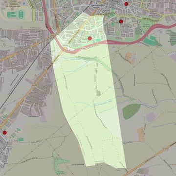

Nuestra Señora de Fátima
- Arciprestazgo
- Fuenlabrada
- Población
- Fuenlabrada
- Dirección postal
- c/ Gazaperas, 15
- Código postal
- 28944
- Extensión
- 3,60 km² (360 ha)
- Teléfono
- 916 901 235
- Correo electrónico
- nsfatima-fuenlabrada@diocesisgetafe.es
- Información demográfica
- De la parroquia · De la población (Fuenlabrada) · Del arciprestazgo (Fuenlabrada)


Descargar mapaLímites según decreto
“Partiendo de la intersección del ferrocarril Madrid-Portugal con la calle Creta, arrancan por el eje de las vías del ferrocarril hasta el término municipal de Humanes de Madrid (en dirección suroeste); continúan por los límites de los términos municipales de Fuenlabrada y Humanes de Madrid (en dirección sur), por los límites de los términos municipales de Fuenlabrada y Parla (en dirección este), por una línea recta imaginaria hasta la calle de Los Arados (en dirección norte), por el eje de la calle Los Arados (en dirección norte), por el eje de la calle Extremadura y por el eje de la calle Creta (en dirección suroeste y noroeste respectivamente) hasta la confluencia con el ferrocarril Madrid-Portugal, punto de partida”. (Boletín Oficial, Junio-2000, pág. 567-568)